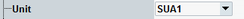

Unit Selection
This section specifies the signaling unit to be used.

Signaling unit selection
- Single-CMW setups
In a single CMW, you can equip up to two SUA. Each SUA board provides two SUA partitions. The GUI and the remote commands select SUA partitions, not SUA boards. In one CMW, you have up to four SUA partitions. You can generate a Bluetooth signal on a single CMW. But you can also use the scenario with a multi-CMW setup. - Multi-CMW setups
The instruments are controlled by an R&S CMWC. The test software including the Bluetooth signaling application is installed and executed on the R&S CMWC.
The options can be distributed over several instruments. But the signaling units (SUA) and TX modules used for Bluetooth signal must be in the same instrument. Example: You cannot use a signaling unit of one instrument plus the TX modules of another instrument.
The SW licenses are pooled in the R&S CMWC, so it does not matter where they are installed.
For the SUA numbering, refer to "Values for Signal Path Selection".
Remote command: